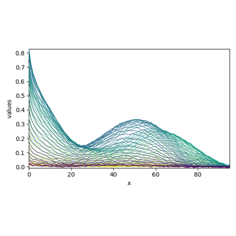

spectrochempy.MCRALS
- class MCRALS(*args, log_level=30, warm_start=False, argsGetConc, argsGetSpec, closureConc=[], closureMethod='scaling', closureTarget='default', getC_to_C_idx='default', getConc=None, getSpec=None, getSt_to_St_idx='default', hardConc, hardSpec, kwargsGetConc, kwargsGetSpec, max_iter=50, maxdiv=5, monoDecConc, monoDecTol=1.1, monoIncConc, monoIncTol=1.1, nonnegConc='all', nonnegSpec='all', normSpec=None, solverConc='lstsq', solverSpec='lstsq', storeIterations=False, tol=0.1, unimodConc='all', unimodConcMod='strict', unimodConcTol=1.1, unimodSpec=[], unimodSpecMod='strict', unimodSpecTol=1.1)[source][source]
Multivariate Curve Resolution Alternating Least Squares (MCRALS).
MCR-ALS (
Multivariate Curve Resolution Alternating Least Squares) resolve’s a set (or several sets) of spectra \(X\) of an evolving mixture (or a set of mixtures) into the spectra \(S^t\) of “pure” species and their concentration profiles \(C\).In terms of matrix equation:
\[X = C.S^t + E\]where \(E\) is the matrix of residuals.
- Parameters:
log_level (any of [
"INFO","DEBUG","WARNING","ERROR"], optional, default:"WARNING") – The log level at startup. It can be changed later on using theset_log_levelmethod or by changing thelog_levelattribute.warm_start (
bool, optional, default:False) – When fitting repeatedly on the same dataset, but for multiple parameter values (such as to find the value maximizing performance), it may be possible to reuse previous model learned from the previous parameter value, saving time.When
warm_startisTrue, the existing fitted model attributes is used to initialize the new model in a subsequent call tofit.argsGetConc (
tuple, optional, default: ()) – Supplementary positional arguments passed to the external function.argsGetSpec (
tuple, optional, default: ()) – Supplementary positional arguments passed to the external function.closureConc (any of [‘all’] or a list, optional, default: []) – Defines the concentration profiles subjected to closure constraint.
[]: no constraint is applied.'all': all profile are constrained so that their weighted sum equals theclosureTargetlistof indexes: the corresponding profiles are constrained so that their weighted sum equalsclosureTarget.
closureMethod (any value of [
'scaling','constantSum'], optional, default:'scaling') – The method used to enforce closure (Omidikia et al. [2018]).'scaling'recompute the concentration profiles using least squares:\[C \leftarrow C \cdot \textrm{diag} \left( C_L^{-1} c_t \right)\]where \(c_t\) is the vector given by
closureTargetand \(C_L^{-1}\) is the left inverse of \(C\).'constantSum'normalize the sum of concentration profiles toclosureTarget.
closureTarget (any of [‘default’] or a numpy array, optional, default:
'default') – The value of the sum of concentrations profiles subjected to closure.'default': the total concentration is set to1.0for all observations.array-like of size n_observations: the values of concentration for each observation. Hence,
np.ones(X.shape[0])would be equivalent to'default'.
getC_to_C_idx (any of [‘default’] or a list, optional, default:
'default') – Correspondence of the profiles returned bygetConcandC[:,hardConc].'default': the profiles correspond to those ofC[:,hardConc]. This is equivalent torange(len(hardConc))listof indexes or ofNone. For instance[2, 1, 0]indicates that the third profile returned bygetC(index2) corresponds to the 1st profile ofC[:, hardConc], the 2nd returned profile (index1) corresponds to second profile ofC[:, hardConc], etc…
getConc (a callable or a unicode string, optional, default:
None) – An external function that providelen(hardConc)concentration profiles.It should be using one of the following syntax:
getConc(Ccurr, *argsGetConc, **kwargsGetConc) -> hardCgetConc(Ccurr, *argsGetConc, **kwargsGetConc) -> hardC, newArgsGetConcgetConc(Ccurr, *argsGetConc, **kwargsGetConc) -> hardC, newArgsGetConc, extraOutputGetConc
where:
Ccurris the currentCdataset,argsGetConcare the parameters needed to completely specify the function.hardCis andarrayorNDDatasetof shape (n_observations , len(hardConc),newArgsGetConcare the updated parameters for the next iteration (can beNone),extraOutputGetConccan be any other relevant output to be kept inextraOutputGetConcattribute, a list ofextraOutputGetConcat each MCR ALS iteration.
Note
getConccan be also a serialized function created using dill and base64 python libraries. Normally not used directly, it is here for internal process.getSpec (a callable or a unicode string, optional, default:
None) – An external function that will providelen(hardSpec)concentration profiles.It should be using one of the following syntax:
getSpec(Stcurr, *argsGetSpec, **kwargsGetSpec) -> hardStgetSpec(Stcurr, *argsGetSpec, **kwargsGetSpec) -> hardSt, newArgsGetSpecgetSpec(Stcurr, *argsGetSpec, **kwargsGetSpec) -> hardSt, newArgsGetSpec, extraOutputGetSpec
with:
*argsGetSpecand**kwargsGetSpec: the parameters needed to completely specify the function.hardSt:ndarrayorNDDatasetof shape(n_observations, len(hardSpec),newArgsGetSpec: updated parameters for the next ALS iteration (can be None),extraOutputGetSpec: any other relevant output to be kept inextraOutputGetSpecattribute, a list ofextraOutputGetSpecat each iterations.
Note
getSpeccan be also a serialized function created using dill and base64 python libraries. Normally not used directly, it is here for internal process.getSt_to_St_idx (any of [‘default’] or a list, optional, default:
'default') – Correspondence between the indexes of the spectra returned bygetSpecandSt.'default': the indexes correspond to those ofSt. This is equivalent torange(len(hardSpec)).listof indexes : corresponding indexes inSt, i.e.[2, None, 0]indicates that the first returned profile corresponds to the thirdStprofile (index2), the 2nd returned profile does not correspond to any profile inSt, the 3rd returned profile corresponds to the firstStprofile (index0).
hardConc (
list, optional, default: []) – Defines hard constraints on the concentration profiles.hardSpec (
list, optional, default: []) – Defines hard constraints on the spectral profiles.kwargsGetConc (
dict, optional, default: {}) – Supplementary keyword arguments passed to the external function.kwargsGetSpec (
dict, optional, default: {}) – Supplementary keyword arguments passed to the external function.max_iter (
int, optional, default: 50) – Maximum number of ALS iteration.maxdiv (
int, optional, default: 5) – Maximum number of successive non-converging iterations.monoDecConc (
list, optional, default: []) – Monotonic decrease constraint on concentrations.[]: no constraint is applied.listof indexes: the corresponding profiles are considered to decrease monotonically, not the others. For instance[0, 2]indicates that profile#0and#2are decreasing while profile#1can increase.
monoDecTol (
float, optional, default: 1.1) – Tolerance parameter for monotonic decrease.Correction is applied only if:
C[i,j] > C[i-1,j] * unimodTol.monoIncConc (
list, optional, default: []) – Monotonic increase constraint on concentrations.[]: no constraint is applied.listof indexes: the corresponding profiles are considered to increase monotonically, not the others. For instance[0, 2]indicates that profile#0and#2are increasing while profile#1can decrease.
monoIncTol (
float, optional, default: 1.1) – Tolerance parameter for monotonic decrease.Correction is applied only if
C[i,j] < C[i-1,j] * unimodTolalong profile#j.nonnegConc (any of [‘all’] or a list, optional, default:
'all') – Non-negativity constraint on concentrations.'all': all concentrations profiles are considered non-negative.listof indexes: the corresponding profiles are considered non-negative, not the others. For instance[0, 2]indicates that profile #0 and #2 are non-negative while profile #1 can be negative.[]: all profiles can be negative.
nonnegSpec (any of [‘all’] or a list, optional, default:
'all') – Non-negativity constraint on spectra.'all': all profiles are considered non-negative.listof indexes : the corresponding profiles are considered non-negative, not the others. For instance[0, 2]indicates that profile#0and#2are non-negative while profile#1can be negative.[]: all profiles can be negative.
normSpec (any value of [
'None','euclid','max'], optional, default:None) – Defines whether the spectral profiles should be normalized.None: no normalization is applied.'euclid': spectra are normalized with respect to their total area,'max': spectra are normalized with respect to their maximum value.
solverConc (any value of [
'lstsq','nnls','pnnls'], optional, default:'lstsq') – Solver used to getCfromXandSt.'lstsq': uses ordinary least squares withlstsq'nnls': non-negative least squares (nnls) are applied sequentially on all profiles'pnnls': non-negative least squares (nnls) are applied on profiles indicated innonnegConcand ordinary least squares on other profiles.
solverSpec (any value of [
'lstsq','nnls','pnnls'], optional, default:'lstsq') – Solver used to getStfromXandC.'lstsq': uses ordinary least squares withlstsq'nnls': non-negative least squares (nnls) are applied sequentially on all profiles'pnnls': non-negative least squares (nnls) are applied on profiles indicated innonnegConcand ordinary least squares on other profiles.
storeIterations (
bool, optional, default: False) – Whether to store the C and St generated at each iteration.tol (
float, optional, default: 0.1) – Convergence criterion on the change of residuals (percent change of standard deviation of residuals).unimodConc (any of [‘all’] or a list, optional, default:
'all') – Unimodality constraint on concentrations.'all': all concentrations profiles are considered unimodal.listof indexes: the corresponding profiles are considered unimodal, not the others. For instance[0, 2]indicates that profile#0and#2are unimodal while profile#1can be multimodal.[]: all profiles can be multimodal.
unimodConcMod (any value of [
'strict','smooth'], optional, default:'strict') – Method to apply unimodality.'strict': values deviating from unimodality are reset to the value of the previous point.'smooth': both values (deviating point and previous point) are modified to avoid steps in the concentration profile.
unimodConcTol (
float, optional, default: 1.1) – Tolerance parameter for unimodality.Correction is applied only if:
C[i,j] > C[i-1,j] * unimodTolon the decreasing branch of profile#j,C[i,j] < C[i-1,j] * unimodTolon the increasing branch of profile#j.
unimodSpec (any of [‘all’] or a list, optional, default: []) – Unimodality constraint on Spectra.
[]: all profiles can be multimodal.'all': all profiles are unimodal (equivalent torange(n_components)).array of indexes : the corresponding profiles are considered unimodal, not the others. For instance
[0, 2]indicates that profile#0and#2are unimodal while profile#1can be multimodal.
unimodSpecMod (any value of [
'strict','smooth'], optional, default:'strict') – Method used to apply unimodality.'strict': values deviating from unimodality are reset to the value of the previous point.'smooth': both values (deviating point and previous point) are modified to avoid steps in the concentration profile.
unimodSpecTol (
float, optional, default: 1.1) – Tolerance parameter for unimodality.Correction is applied only if the deviating point
St[j, i]is larger thanSt[j, i-1] * unimodSpecTolon the decreasing branch of profile#j, or lower thanSt[j, i-1] * unimodTolon the increasing branch of profile#j.
See also
EFAPerform an Evolving Factor Analysis (forward and reverse).
FastICAPerform Independent Component Analysis with a fast algorithm.
IRISIntegral inversion solver for spectroscopic data.
NMFNon-Negative Matrix Factorization.
PCAPerform Principal Components Analysis.
SIMPLISMASIMPLe to use Interactive Self-modeling Mixture Analysis.
SVDPerform a Singular Value Decomposition.
Initialize the BaseConfigurable class.
- Parameters:
log_level (int, optional) – The log level at startup. Default is logging.WARNING.
**kwargs (dict) – Additional keyword arguments for configuration.
Attributes Summary
The final concentration profiles.
The last constrained concentration profiles, i.e. after applying the hard and soft constraints.
The list of constrained concentration profiles at each ALS iteration.
The list of concentration profiles obtained by least square optimization and scaling at each ALS iteration.
Deprecated.
The final spectra profiles.
The list of constrained spectral profiles at each ALS iteration.
The last spectral profiles obtained by least-square optimization, before constraints.
The list of optimized spectral profiles at each ALS iteration.
Deprecated.
Return the X input dataset (eventually modified by the model).
The
Yinput.Supplementary positional arguments passed to the external function.
Supplementary positional arguments passed to the external function.
Defines the concentration profiles subjected to closure constraint.
The method used to enforce closure (Omidikia et al. [2018]).
The value of the sum of concentrations profiles subjected to closure.
NDDatasetwith components in feature space (n_components, n_features).traitlets.config.Configobject.The extra outputs of the external function used to get concentrations.
The extra outputs of the external function used to get spectra.
Correspondence of the profiles returned by
getConcandC[:,hardConc].An external function that provide
len(hardConc)concentration profiles.An external function that will provide
len(hardSpec)concentration profiles.Correspondence between the indexes of the spectra returned by
getSpecandSt.Defines hard constraints on the concentration profiles.
Defines hard constraints on the spectral profiles.
Supplementary keyword arguments passed to the external function.
Supplementary keyword arguments passed to the external function.
Return
logoutput.Maximum number of ALS iteration.
Maximum number of successive non-converging iterations.
Monotonic decrease constraint on concentrations.
Tolerance parameter for monotonic decrease.
Monotonic increase constraint on concentrations.
Tolerance parameter for monotonic decrease.
Number of components that were fitted.
Object name
Non-negativity constraint on concentrations.
Non-negativity constraint on spectra.
Defines whether the spectral profiles should be normalized.
Whether to store the C and St generated at each iteration.
Convergence criterion on the change of residuals (percent change of standard deviation of residuals).
Unimodality constraint on concentrations.
Method to apply unimodality.
Tolerance parameter for unimodality.
Unimodality constraint on Spectra.
Method used to apply unimodality.
Tolerance parameter for unimodality.
Methods Summary
fit(X, Y)Fit the MCRALS model on an X dataset using initial concentration or spectra.
fit_transform(X, Y, **kwargs)Fit the model with
Xand apply the dimensionality reduction onX.get_components([n_components])Return the component's dataset: (selected n_components, n_features).
inverse_transform([X_transform])Transform data back to its original space.
parameters([replace, removed, default])Alias for
paramsmethod.params([default])Return current or default configuration values.
plotmerit([X, X_hat])Plot the input (
X), reconstructed (X_hat) and residuals.reconstruct([X_transform])Transform data back to its original space.
reduce([X])Apply dimensionality reduction to
X.reset()Reset configuration parameters to their default values.
to_dict()Return config value in a dict form.
transform([X])Apply dimensionality reduction to
X.Attributes Documentation
- C
The final concentration profiles.
- C_constrained
The last constrained concentration profiles, i.e. after applying the hard and soft constraints.
- C_constrained_list
The list of constrained concentration profiles at each ALS iteration.
Requires
MCRALS.storeIterationsset to True.
- C_ls_list
The list of concentration profiles obtained by least square optimization and scaling at each ALS iteration.
Requires
MCRALS.storeIterationsset to True.
- St
The final spectra profiles.
- St_constrained_list
The list of constrained spectral profiles at each ALS iteration.
Requires
MCRALS.storeIterationsset to True.
- St_ls
The last spectral profiles obtained by least-square optimization, before constraints.
Spectra obtained after solving \(C_{\textrm{constrained}} \cdot St = X\) for \(St\).
- St_ls_list
The list of optimized spectral profiles at each ALS iteration.
Requires
MCRALS.storeIterationsset to True.
- X
Return the X input dataset (eventually modified by the model).
- argsGetConc
Supplementary positional arguments passed to the external function.
- argsGetSpec
Supplementary positional arguments passed to the external function.
- closureConc
Defines the concentration profiles subjected to closure constraint.
[]: no constraint is applied.'all': all profile are constrained so that their weighted sum equals theclosureTargetlistof indexes: the corresponding profiles are constrained so that their weighted sum equalsclosureTarget.
- closureMethod
The method used to enforce closure (Omidikia et al. [2018]).
'scaling'recompute the concentration profiles using least squares:\[C \leftarrow C \cdot \textrm{diag} \left( C_L^{-1} c_t \right)\]where \(c_t\) is the vector given by
closureTargetand \(C_L^{-1}\) is the left inverse of \(C\).'constantSum'normalize the sum of concentration profiles toclosureTarget.
- closureTarget
The value of the sum of concentrations profiles subjected to closure.
'default': the total concentration is set to1.0for all observations.array-like of size n_observations: the values of concentration for each observation. Hence,
np.ones(X.shape[0])would be equivalent to'default'.
- components
NDDatasetwith components in feature space (n_components, n_features).See also
get_componentsRetrieve only the specified number of components.
- config
traitlets.config.Configobject.
- extraOutputGetConc
The extra outputs of the external function used to get concentrations.
- extraOutputGetSpec
The extra outputs of the external function used to get spectra.
- getC_to_C_idx
Correspondence of the profiles returned by
getConcandC[:,hardConc].'default': the profiles correspond to those ofC[:,hardConc]. This is equivalent torange(len(hardConc))listof indexes or ofNone. For instance[2, 1, 0]indicates that the third profile returned bygetC(index2) corresponds to the 1st profile ofC[:, hardConc], the 2nd returned profile (index1) corresponds to second profile ofC[:, hardConc], etc…
- getConc
An external function that provide
len(hardConc)concentration profiles.It should be using one of the following syntax:
getConc(Ccurr, *argsGetConc, **kwargsGetConc) -> hardCgetConc(Ccurr, *argsGetConc, **kwargsGetConc) -> hardC, newArgsGetConcgetConc(Ccurr, *argsGetConc, **kwargsGetConc) -> hardC, newArgsGetConc, extraOutputGetConc
where:
Ccurris the currentCdataset,argsGetConcare the parameters needed to completely specify the function.hardCis andarrayorNDDatasetof shape (n_observations , len(hardConc),newArgsGetConcare the updated parameters for the next iteration (can beNone),extraOutputGetConccan be any other relevant output to be kept inextraOutputGetConcattribute, a list ofextraOutputGetConcat each MCR ALS iteration.
Note
getConccan be also a serialized function created using dill and base64 python libraries. Normally not used directly, it is here for internal process.
- getSpec
An external function that will provide
len(hardSpec)concentration profiles.It should be using one of the following syntax:
getSpec(Stcurr, *argsGetSpec, **kwargsGetSpec) -> hardStgetSpec(Stcurr, *argsGetSpec, **kwargsGetSpec) -> hardSt, newArgsGetSpecgetSpec(Stcurr, *argsGetSpec, **kwargsGetSpec) -> hardSt, newArgsGetSpec, extraOutputGetSpec
with:
*argsGetSpecand**kwargsGetSpec: the parameters needed to completely specify the function.hardSt:ndarrayorNDDatasetof shape(n_observations, len(hardSpec),newArgsGetSpec: updated parameters for the next ALS iteration (can be None),extraOutputGetSpec: any other relevant output to be kept inextraOutputGetSpecattribute, a list ofextraOutputGetSpecat each iterations.
Note
getSpeccan be also a serialized function created using dill and base64 python libraries. Normally not used directly, it is here for internal process.
- getSt_to_St_idx
Correspondence between the indexes of the spectra returned by
getSpecandSt.'default': the indexes correspond to those ofSt. This is equivalent torange(len(hardSpec)).listof indexes : corresponding indexes inSt, i.e.[2, None, 0]indicates that the first returned profile corresponds to the thirdStprofile (index2), the 2nd returned profile does not correspond to any profile inSt, the 3rd returned profile corresponds to the firstStprofile (index0).
- hardConc
Defines hard constraints on the concentration profiles.
- hardSpec
Defines hard constraints on the spectral profiles.
- kwargsGetConc
Supplementary keyword arguments passed to the external function.
- kwargsGetSpec
Supplementary keyword arguments passed to the external function.
- log
Return
logoutput.
- maxdiv
Maximum number of successive non-converging iterations.
- monoDecConc
Monotonic decrease constraint on concentrations.
[]: no constraint is applied.listof indexes: the corresponding profiles are considered to decrease monotonically, not the others. For instance[0, 2]indicates that profile#0and#2are decreasing while profile#1can increase.
- monoDecTol
Tolerance parameter for monotonic decrease.
Correction is applied only if:
C[i,j] > C[i-1,j] * unimodTol.
- monoIncConc
Monotonic increase constraint on concentrations.
[]: no constraint is applied.listof indexes: the corresponding profiles are considered to increase monotonically, not the others. For instance[0, 2]indicates that profile#0and#2are increasing while profile#1can decrease.
- monoIncTol
Tolerance parameter for monotonic decrease.
Correction is applied only if
C[i,j] < C[i-1,j] * unimodTolalong profile#j.
- n_components
Number of components that were fitted.
- name
Object name
- nonnegConc
Non-negativity constraint on concentrations.
'all': all concentrations profiles are considered non-negative.listof indexes: the corresponding profiles are considered non-negative, not the others. For instance[0, 2]indicates that profile #0 and #2 are non-negative while profile #1 can be negative.[]: all profiles can be negative.
- nonnegSpec
Non-negativity constraint on spectra.
'all': all profiles are considered non-negative.listof indexes : the corresponding profiles are considered non-negative, not the others. For instance[0, 2]indicates that profile#0and#2are non-negative while profile#1can be negative.[]: all profiles can be negative.
- normSpec
Defines whether the spectral profiles should be normalized.
None: no normalization is applied.'euclid': spectra are normalized with respect to their total area,'max': spectra are normalized with respect to their maximum value.
- solverConc
Solver used to get
CfromXandSt.'lstsq': uses ordinary least squares withlstsq'nnls': non-negative least squares (nnls) are applied sequentially on all profiles'pnnls': non-negative least squares (nnls) are applied on profiles indicated innonnegConcand ordinary least squares on other profiles.
- solverSpec
Solver used to get
StfromXandC.'lstsq': uses ordinary least squares withlstsq'nnls': non-negative least squares (nnls) are applied sequentially on all profiles'pnnls': non-negative least squares (nnls) are applied on profiles indicated innonnegConcand ordinary least squares on other profiles.
- storeIterations
Whether to store the C and St generated at each iteration.
- tol
Convergence criterion on the change of residuals (percent change of standard deviation of residuals).
- unimodConc
Unimodality constraint on concentrations.
'all': all concentrations profiles are considered unimodal.listof indexes: the corresponding profiles are considered unimodal, not the others. For instance[0, 2]indicates that profile#0and#2are unimodal while profile#1can be multimodal.[]: all profiles can be multimodal.
- unimodConcMod
Method to apply unimodality.
'strict': values deviating from unimodality are reset to the value of the previous point.'smooth': both values (deviating point and previous point) are modified to avoid steps in the concentration profile.
- unimodConcTol
Tolerance parameter for unimodality.
Correction is applied only if:
C[i,j] > C[i-1,j] * unimodTolon the decreasing branch of profile#j,C[i,j] < C[i-1,j] * unimodTolon the increasing branch of profile#j.
- unimodSpec
Unimodality constraint on Spectra.
[]: all profiles can be multimodal.'all': all profiles are unimodal (equivalent torange(n_components)).array of indexes : the corresponding profiles are considered unimodal, not the others. For instance
[0, 2]indicates that profile#0and#2are unimodal while profile#1can be multimodal.
- unimodSpecMod
Method used to apply unimodality.
'strict': values deviating from unimodality are reset to the value of the previous point.'smooth': both values (deviating point and previous point) are modified to avoid steps in the concentration profile.
- unimodSpecTol
Tolerance parameter for unimodality.
Correction is applied only if the deviating point
St[j, i]is larger thanSt[j, i-1] * unimodSpecTolon the decreasing branch of profile#j, or lower thanSt[j, i-1] * unimodTolon the increasing branch of profile#j.
Methods Documentation
- fit(X, Y)[source][source]
Fit the MCRALS model on an X dataset using initial concentration or spectra.
- Parameters:
X (
NDDatasetor array-like of shape (n_observations, n_features)) – Training data.Y (array-like or list of array-like) – Initial concentration or spectra.
- Returns:
self – The fitted instance itself.
See also
fit_transformFit the model with an input dataset
Xand apply the dimensionality reduction onX.fit_reduceAlias of
fit_transform(Deprecated).
- fit_transform(X, Y, **kwargs)[source][source]
Fit the model with
Xand apply the dimensionality reduction onX.- Parameters:
X (
NDDatasetor array-like of shape (n_observations, n_features)) – Training data.Y (array-like or list of array-like) – Initial concentration or spectra.
**kwargs (keyword parameters, optional) – See Other Parameters.
- Returns:
NDDataset– Dataset with shape (n_observations, n_components).- Other Parameters:
n_components (
int, optional) – The number of components to use for the reduction. If not given the number of components is eventually the one specified or determined in thefitprocess.
- get_components(n_components=None)
Return the component’s dataset: (selected n_components, n_features).
- Parameters:
n_components (
int, optional, default:None) – The number of components to keep in the output dataset. IfNone, all calculated components are returned.- Returns:
NDDataset– Dataset with shape (n_components, n_features)
- inverse_transform(X_transform=None, **kwargs)[source][source]
Transform data back to its original space.
In other words, return an input
X_originalwhose reduce/transform would be X.- Parameters:
X_transform (array-like of shape (n_observations, n_components), optional) – Reduced
Xdata, wheren_observationsis the number of observations andn_componentsis the number of components. IfX_transformis not provided, a transform ofXprovided infitis performed first.Y_transform (
NDDatasetor array-like of shape (n_observations,n_components), optional) – New data, where n_targets is the number of variables to predict. IfY_transformis not provided, a transform ofYprovided infitis performed first.**kwargs (keyword parameters, optional) – See Other Parameters.
- Returns:
NDDataset– Dataset with shape (n_observations, n_features).- Other Parameters:
n_components (
int, optional) – The number of components to use for the reduction. If not given the number of components is eventually the one specified or determined in thefitprocess.
- parameters(replace="params", removed="0.7.1") def parameters(self, default=False)[source]
Alias for
paramsmethod.
- plotmerit(X=None, X_hat=None, **kwargs)[source]
Plot the input (
X), reconstructed (X_hat) and residuals.\(X\) and \(\hat{X}\) can be passed as arguments. If not, the
Xattribute is used for \(X`and :math:\)hat{X}`is computed by theinverse_transformmethod- Parameters:
X (
NDDataset, optional) – Original dataset. If is not provided (default), theXattribute is used and X_hat is computed usinginverse_transform.X_hat (
NDDataset, optional) – Inverse transformed dataset. ifXis provided,X_hatmust also be provided as compuyed externally.**kwargs (keyword parameters, optional) – See Other Parameters.
- Returns:
Axes– Matplotlib subplot axe.- Other Parameters:
colors (
tupleorndarrayof 3 colors, optional) – Colors forX,X_hatand residualsE. in the case of 2D, The default colormap is used forX. By default, the three colors areNBlue,NGreenandNRed(which are colorblind friendly).offset (
float, optional, default:None) – Specify the separation (in percent) between the \(X\) , \(X_hat\) and \(E\).nb_traces (
intor'all', optional) – Number of lines to display. Default is'all'.**others (Other keywords parameters) – Parameters passed to the internal
plotmethod of theXdataset.
- reconstruct(X_transform=None, **kwargs)[source]
Transform data back to its original space.
In other words, return an input
X_originalwhose reduce/transform would beX_transform.- Parameters:
X_transform (array-like of shape (n_observations, n_components), optional) – Reduced
Xdata, wheren_observationsis the number of observations andn_componentsis the number of components. IfX_transformis not provided, a transform ofXprovided infitis performed first.**kwargs (keyword parameters, optional) – See Other Parameters.
- Returns:
NDDataset– Dataset with shape (n_observations, n_features).- Other Parameters:
n_components (
int, optional) – The number of components to use for the reduction. If not given the number of components is eventually the one specified or determined in thefitprocess.
See also
reconstructAlias of inverse_transform (Deprecated).
Notes
Deprecated in version 0.6.
- reduce(X=None, **kwargs)[source]
Apply dimensionality reduction to
X.- Parameters:
X (
NDDatasetor array-like of shape (n_observations, n_features), optional) – New data, where n_observations is the number of observations and n_features is the number of features. if not provided, the input dataset of thefitmethod will be used.**kwargs (keyword parameters, optional) – See Other Parameters.
- Returns:
NDDataset– Dataset with shape (n_observations, n_components).- Other Parameters:
n_components (
int, optional) – The number of components to use for the reduction. If not given the number of components is eventually the one specified or determined in thefitprocess.
Notes
Deprecated in version 0.6.
- transform(X=None, **kwargs)
Apply dimensionality reduction to
X.- Parameters:
X (
NDDatasetor array-like of shape (n_observations, n_features), optional) – New data, where n_observations is the number of observations and n_features is the number of features. if not provided, the input dataset of thefitmethod will be used.**kwargs (keyword parameters, optional) – See Other Parameters.
- Returns:
NDDataset– Dataset with shape (n_observations, n_components).- Other Parameters:
n_components (
int, optional) – The number of components to use for the reduction. If not given the number of components is eventually the one specified or determined in thefitprocess.
Examples using spectrochempy.MCRALS

MCR-ALS example (adapted from Jaumot et al. 2005)